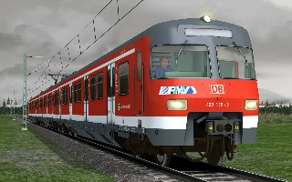
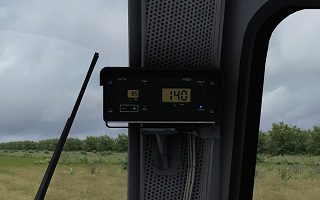

Mods/DTG Train Simulator Classic
Ich habe meistens Repaints von (deutschen) Zügen gemacht, aber auch private Scriptmodifikationen. Vielleicht veröffentliche ich sie hier ein anderes Mal.
Da nicht jeder Deutsche wie ich Englisch versteht, ist diese Seite zweisprachig ausgeführt. Bilder lassen sich mit einem Klick vergrößern.
I mostly made repaints of (german) trains in this game, but I also made some private script modifications for some trains. Maybe I'll post them here one day.
Since not every german can speak english like me, this page is bilingual. Clicking on pictures enlarges them.
Baureihe 420 Verkehrsrot Neutral Link
Ein kleiner Textur-Ersatz für den verkehrsroten Anstrich, der die "DB Bahn"- und "S-Bahn München"-Aufkleber entfernt.
A small texture replacement for the default traffic red paint, removing the "DB Bahn" and "S-Bahn München" decals.
Download
Baureihe 420 Verkehrsrot S-Bahn Rhein-Main Link

Meine Version vom Anstrich der S-Bahn Rhein-Main. Gemacht, weil mir andere ähnliche Anstriche qualitativ nicht genügten. Eigenwerbung inklusive!
My version of a S-Bahn Rhein-Main paint. I made this, because other similar repaints were not good for me quality-wise. Self-promotion included!
Download
Baureihe 234 PZB-Skriptmodifikation Link

Für die Baureihe 232 von virtualRailroads gibt es
von Amisia ein hervorragendes Repaint-Pack, welches unter anderem auch 234er ins Spiel bringt, die auch 140 km/h erreichen können.
Das Problem ist allerdings, dass die PZB weiterhin für die BR232 ausgelegt ist und ab 125 km/h die Lok automatisch herunterbremst. Diese Skriptmodifikation hebt die PZB-Höchstgeschwindigkeit auf 145 km/h an und wendet sie an den 234ern des Packs an. Das Originalskript wird hiervon nicht überschrieben, das heißt, die PZB der 232er wird weiterhin so funktionieren, wie sie soll.
For the Baureihe 232 from virtualRailroads, there is
an extraordinary repaint pack made by Amisia which will also add 234s into the game, that can reach 140 km/h.
The problem is that the PZB is still interpreted for the BR232 and will automatically brake the loco above 125 km/h. This script modification raises the PZB top speed to 145 km/h and applies it to the 234s of that pack. The original script will not be overwritten by this, making the PZB of the 232s still work as they should.
Download
{kind=link}
{kind=link}
{kind=link}
{kind=link}
{kind=link}
{kind=link}
{kind=link}